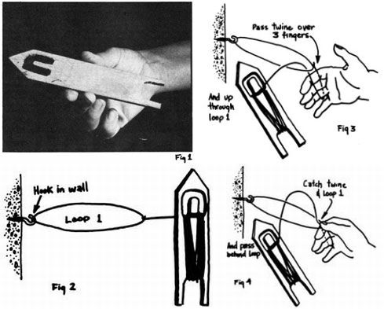
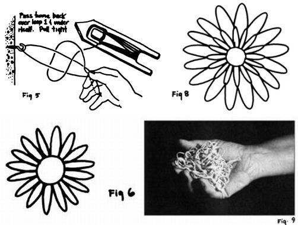
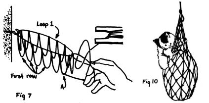
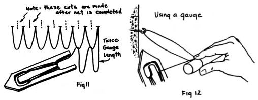

Hats off, everyone, to the stone-age technician who invented the net ... a perfect example of just a little material used in exactly the right way to do a job well. A simpler solution to a hundred problems of holding, catching or carrying things would be hard to think of. No wonder that nets-already known to prehistoric man-appear in Egyptian wall paintings, were employed by the ancient Greeks and are still in wide use to this day.
The commercial fisherman has his trawls and seines, and the sporting angler his landing net. Webbing of various kinds is used in war for camouflage, in play as a barrier (tennis and volleyball) or as a catcher (basketball) and in everyday life to carry and hold objects. I've seen nets rigged in trains and cars to support small articles up out of the way, and tied over a truck bed to keep bulky loads in place. On the front cover of MOTHER NO. 8 you can see one serving a purpose for which strength and lightness are mandatory (as a gondola support on a man-carrying balloon).
You can easily produce one of these useful devices by hand ... not a common operation nowadays, but the process is so simple and the result so handy that it's well worth your while to learn the satisfying netcrafter's art.
What can you make of netting? Well, how about a string bag that will crumple to a pocket- or handbag-sized handful ... yet hold as much as two supermarket sacks and-unlike them-never tear under any load you'd want to carry? The technique is so easy and quick that you can create one of these gadgets as a gift for-say-your dinner party hostess while she looks on.
Or you can make a hammock which will take up no room to speak of in a camping outfit, yet will spread to a comfortable bed when slung between two trees.
You can also knot together a protective cover that will keep birds off the strawberry patch, or a snare with which to trap animals for food. I myself learned the craft in wartime when I needed to catch rabbits for meat.
Perhaps you'd like to have a net slung under the roof of your car or camper to carry small articles-maps and so on-where they'll be out of reach, but where you can always see them. And wouldn't you enjoy making your own equipment for badminton, tennis, volleyball or netball?
Any article you produce, of course, can be tied from different-colored twines if you want it to be decorative as well as useful.
You need only one tool to make a net: a wooden needle shaped as shown in Fig. 1.
The needle in the picture is made of a lovely bit of mahogany five-ply a quarter of an inch thick, left over from building a boat. Although wood is the best material, I've also fabricated this piece of netting equipment out of hardboard (such as Masonite) which works quite well until hard use makes the point start to come apart. I suppose a good needle could be cut from sheet metal, but I've never tried.
The device shown in the illustration is six inches long by one inch wide, a good average size to start with. The measurements of the tool determine how small a mesh you can make ... you must use a small needle to manufacture fine webbing and a large one to carry a reasonable supply of the heavy cord generally chosen for the construction of very coarse mesh nets.
A good way to start your first project is with a ball of macramé twine, which is both easy to manipulate and makes a satisfyingly strong net. Don't be afraid to use another string if you can't get macrame, though ... any strong cord about as thick as a pencil lead will do.
Load your netting needle (sometimes called a bobbin) with the twine: Take a turn of the free end of the ball of string around the tool's pin and carry the cord around the bottom end of the bobbin, back up the other side, around the pin, back down under ... and so on until the reel is full. Cut the twine.
Tie a loop-big enough to let the needle slip through freely-in the end of the string coming from the needle. Call this Loop 1. Slip the circle of cord over a hook in the wall or tie it to a doorknob, a low branch of a tree, the back of a chair, whatever. When I was young my embryonic long-net for rabbiting was constructed with its first loop tied to the U-trap under the washbasin in the bathroom.
Your project now looks like Fig. 2.
Pass the twine over three fingers of your hand and thread the needle through Loop 1 (see Fig. 3). Catch the string and Loop 1 between finger and thumb, with the twine gently gauged around three fingers as shown in Fig. 4. Pass the cord behind Loop 1 and, last of all, carry the string behind Loop 1 and under itself (Fig. 5) ... then pull the twine tight.
Congratulations! You have just made a netter's knot. If you look at it closely, you will see that it's actually a sheet bend.
Beware: it's possible to mismake this knot if you fail to catch the twine and Loop I between thumb and forefinger. In that case you'll form, instead, a slipknot which will run back and forth along Loop 1. If this misfortune occurs, a sharp jerk on the needle against the newly formed loop will cause the knot to become a sheet bend. (if I hadn't written this article I might never have known that the sheet bend and the slipknot were so closely related.)
But to work! To work! Make another loop, exactly like the last one, through Loop 1, and keep going until you have fifteen or so additions to the original circle. Cut the twine between the needle and the last knot, close to the fastening itself.
You should now be able to lay out the work with Loop 1 as the sun and the fifteen or more additions as rays. Fig. 6 is a rather idealized drawing of this situation and has sixteen surrounding loops because the diagram is easier to draw that way. Call the ray-loops Row 1.
Now tie the loose end of the twine on the needle to any one of the loops in the first row. This knot is A in Fig. 7.
Pick up the next loop in Row 1 with the needle, gauge the length over three fingers-pulling just gently tight-and make a netter's knot in the second loop. Take another look at Fig. 7 to help you.
Next make a loop between the second and third circles of the first row, another between the third and fourth, and so on all the way around. (Make sure you get every one of those bits of string in the correct order. It's one of my failings to tie Number 4, say, to Number 9 and then wonder what happened.) When you've finished the circuit and made the connection between the last and first loop of Row 1-so completing the second round-cut the twine.
If you spread the net out now, it no longer resembles the sun but a flower with small petals and large sepals looking over the shoulders of those petals. Fig. 8 will give you the idea.
Continue to work until you've made a third row on the second, a fourth on the third, and so on through twelve rows.
Finally, thread a handle through the loops of Row 12 ... a strong bootlace, a piece of quarter-inch cotton rope or some other material which is soft enough to let your hands take the weight of the load. The string bag is now finished.
You'll agree that your carrying bag is a useful handful. Fig. 9 shows its dimensions crumpled up, and the netted carryall can be seen supporting 23-1/2 pounds of gravel and one pound of curious kitten in Fig. 10.
The net I've just described can be made in various sizes for various purposes. If you need an open-ended tube (like a basketball net) rather than a bag, just cut through the first ring of loops to release them.
If you prefer to make a flat net for tennis, volleyball, rabbiting or holding things conveniently in the roof of the yurt ... that too, you'll find, is easy.
Start out as you did before for the tubular structure, by setting a loop on an anchoring hook ... but let's say that what you really want is a 30" X 30" rabbiter's net. You can still use the three-finger gauge, which runs about eight mesh to the foot. For a 30-inch length, therefore, you'll need 20 loops on the first row.
OK. Now comes the big difference between making a tubular and a flat net: When you've cast on those 20 loops, don't cut the twine. Instead, start immediately back down the row and make a knot between the string on the needle and the last loop you formed in Row 1. This results in an edge loop with one side twice the length of the gauge ... see Fig. 11 to understand how this is done.
Once you've worked your way to the other end of Row 2. turn around again without cutting the string and go back down the second row of loops to make Row 3. Keep on going back and forth until you have 20 rows, which should come out to 30 inches when the net is spread out square.
Complete the work by cutting Loop 1 between each of Row 1's loops. Rabbiting nets are finished with a strong cord around the perimeter of the web and tied to a peg.
Up to this point, the only piece of equipment you've needed is the netting needle (and, of course, some string). If you want to make a small net with the meshes exactly even, however, you'll need a foot-long piece of broomstick to serve as a gauge. In the case of a net with large loops such a tool is absolutely necessary, and can consist of a length of flat board.
To use a gauge, wind the twine around the piece of wood at the points in the instructions where I took the string around three fingers. Once you've made a knot, cast the loop off the gauge before starting the next loop ... otherwise the tool gets in the way (Fig. 12).
As you increase your mastery of the ancient craft of netting, many applications will occur to you beyond those I've mentioned. Good luck and happy knotting.
|
 |
 |
 |
|
 |
|
|